GoodSocials logo candidates 24 marks, 200 by 200, one accent each.
Palette fixed by DESIGN.md: paper #F4F4F4, ink #000000, accent #E8590C. Source SVG next to every PNG.
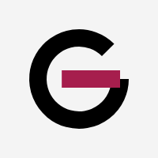
01 G, openGeometric G. The crossbar is the only colour.
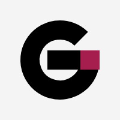
02 G, heavySame construction at display weight. Square terminal in accent.
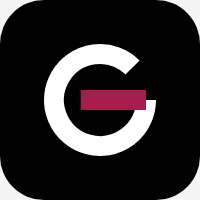
03 G, dark tileApp icon weight. Same mark knocked out of ink.04 G, accent badgeSpends the whole accent budget in one disc. Loudest option.
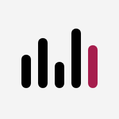
05 Five columnsIdea, Draft, Image, Scheduled, Posted. Posted is the accent.
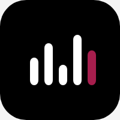
06 Five columns, tileThe board as an app icon. Survives 16px.
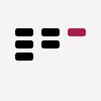
07 Cards in columnsThree columns, uneven counts. A real board is never balanced.
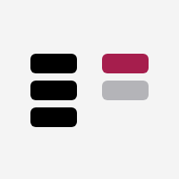
08 Card movedThe one card that just changed column.09 Approve, tileThe only action that matters, cut out of ink.10 Approve, accentBare mark. Nothing to shrink badly.11 Approve, ringRing holds it together in a round avatar crop.12 Queue approvedThree drafts waiting, one approval. The whole product.13 Streak, dotsPosting history. Filled is published, grey is ahead of today.
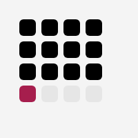
14 Streak, gridContribution grid. Reads as regularity without a single word.
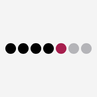
15 Seven daysFour posted, today publishing, two scheduled.
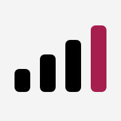
16 Cadence, risingVolume going up. Closest thing here to a chart, which is a risk.
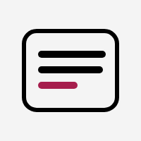
17 Post cardA drafted post. The last line is still being written.18 BubbleSays social without saying LinkedIn.19 Bubble approvedContent plus consent, one shape.20 Card approvedThe approval queue, literally. Busiest mark in the set.
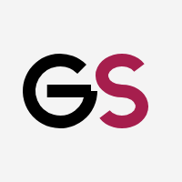
21 GS, pairTwo letters, one weight, drawn on the same circle grid.
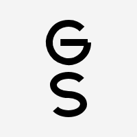
22 GS, stackedSquare lockup. Two letters at one weight, stacked.
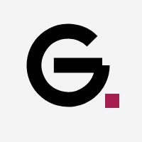
23 G, full stopPosted. The dot is the whole tone of voice.
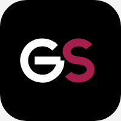
24 GS, dark tileThe pair on ink. Safest thing to put on a dark LinkedIn avatar.